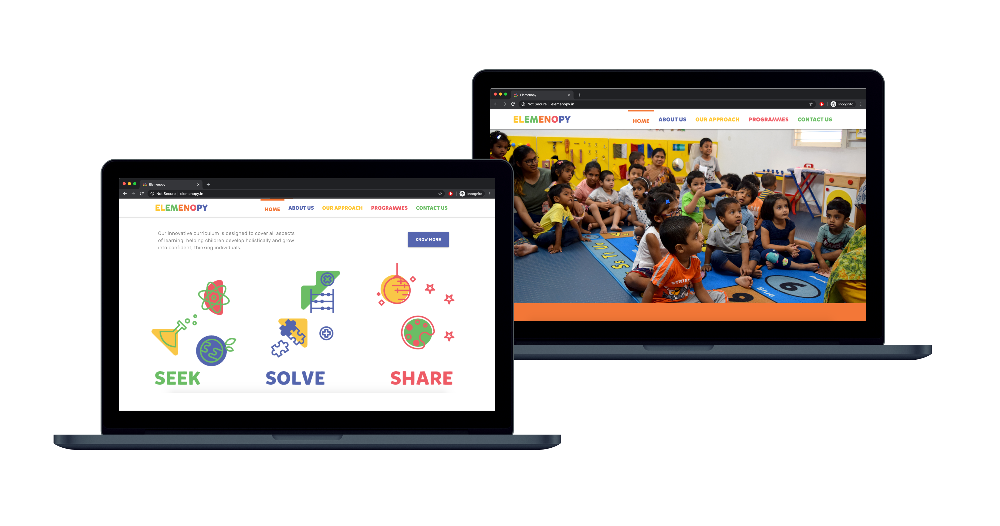
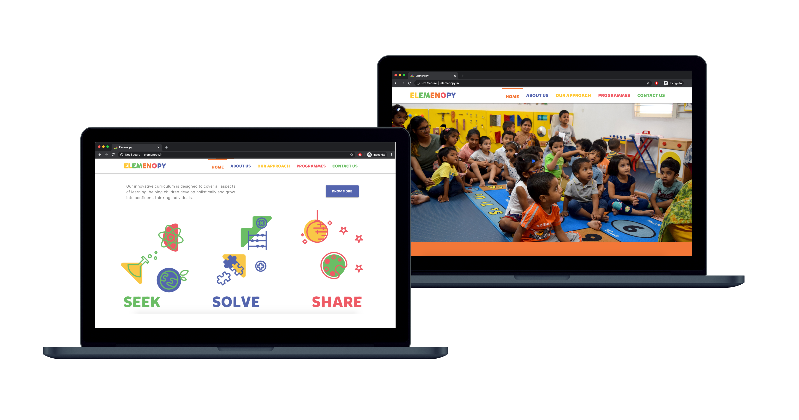

← Back to logowall
The ABC’s of designing a preschool
When a friend decided to start her own preschool out of a bungalow in Chennai, she reached out to us (Jyothi and me) to work on the name and brand design. We set out to visually define what learning looks like for two to five year olds. The opportunity statement we worked with was, 'How might we design the identity of a preschool to reflect an inclusive learning experience?'
 The name elemenopy resonated unanimously, as the phonetic association of the sung alphabet felt familiar and timeless.
For the logo and identity, we presented the 3 routes, and ultimately picked one that was a simple play of shapes derived from the alphabet, since it perfectly complemented the ‘learning basics’ philosophy that the name intended.
We wanted to create a sense of belonging and comfort for the children, across all brand communication. A few early explorations below.
The name elemenopy resonated unanimously, as the phonetic association of the sung alphabet felt familiar and timeless.
For the logo and identity, we presented the 3 routes, and ultimately picked one that was a simple play of shapes derived from the alphabet, since it perfectly complemented the ‘learning basics’ philosophy that the name intended.
We wanted to create a sense of belonging and comfort for the children, across all brand communication. A few early explorations below.

For the final logo that was selected, the shapes were an abstraction of the letters L,M,N,O and P, that take on many meanings across communication collaterals, effortlessly. We defined a playful colour palette and used the font Mikado for the wordmark.


We worked a little bit on the content and space design as well. We wrote ptions for mottoes, tag-lines and philosophies that the pre-school stands for, and adapted the shapes to form joyful compositions and sceneries. We did some research on montessori principles of education and adapted a version of teaching a child ‘how to learn rather than what to learn.‘ For the website, we decided to name the five stages of learning in the preschool starting with L-M-N-O-P respectively — Little Learners, Meaning Makers, Nifty Newbies, Observers and Pioneers. The core creative guideline of the brand, both internal and external, remained grounded with the rhetorical and catchy ‘Seek, Solve, Share’.
 

Overall it has been one of the more fulfilling projects that I have helped bring to life, and I enjoy watching it grow. Go to their instagram →

← Back to logowall